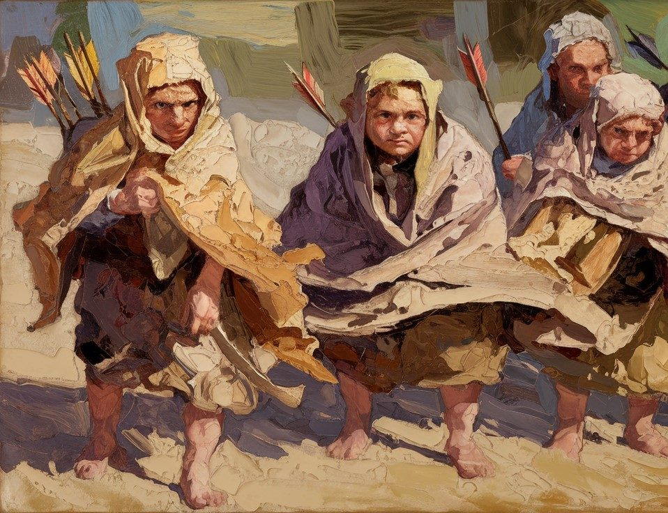

Halflings
Halflings are known for their wiliness and good cheer. They come in two main groups: the Sand Halflings of the Rockfire Desert and the Grass Halflings, a diaspora people scattered across the continent.
Sand Halflings
Sand Halflings live in nomadic tribes in the Rockfire Desert. They speak Halfling, a language in the Common family, with names drawn from Arabic traditions. Their dress is Bedouin in style. Sand Halflings are known to enjoy darts and mushroom-based intoxicants.

Grass Halflings
Grass Halflings formerly lived a nomadic life on the Sea of Grass, in the northern foothills of the southern mountains. This was one of the first areas to become part of the Arcane Order, and Grass Halflings were heavily integrated into the society of the Central Valley, with several halfling archmagi rising to prominence.
The Giant invasion roughly 200 years ago devastated the Sea of Grass and forced the Grass Halflings into exile throughout the continent. Today, Grass Halflings can be found in towns across the region. They speak a local dialect and use Turkish naming conventions. Like the Sand Halflings, they favour Bedouin-style dress.
Religion
Halflings believe themselves to be the special children of the Lucky One among the Old Gods.
History
A halfling warlord known as Mete Half-Ear established the largest empire between the Cataclysm and the rise of the Goblin Despotate — a significant achievement in an era of fragmentation.
See also
- Giant Clans — whose invasion ended the Grass Halfling way of life
- History of Moonrise — the Arcane Order, in which Grass Halflings played a notable role
- Idioms — Halfling sayings